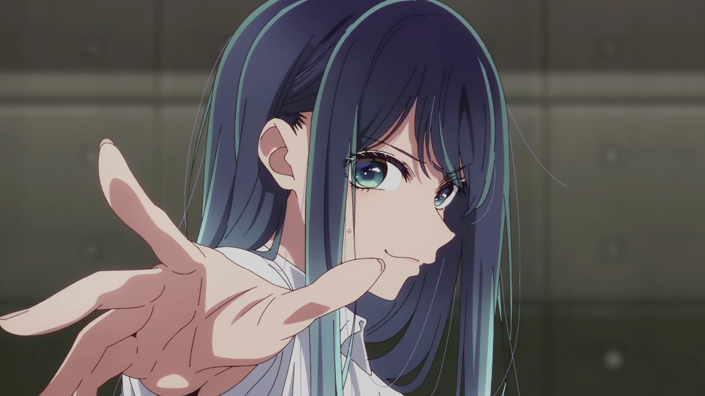
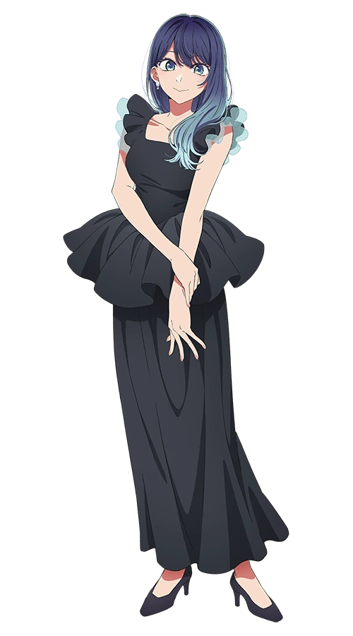
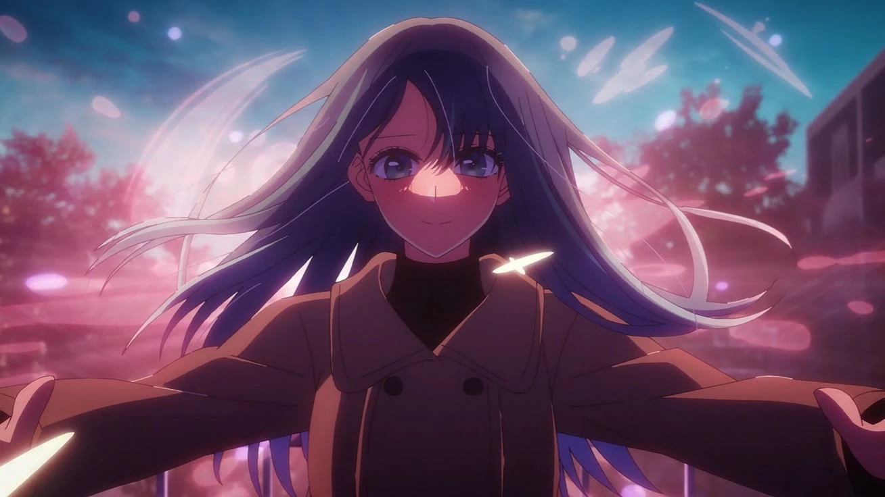
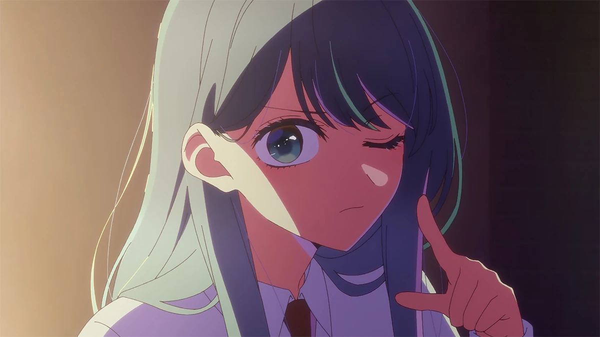

01 / CHARACTER ARCHIVE
跟著茜，
跟著茜，
收藏每一種藍。
走進黑川茜專區。
三季圖庫、角色檔案與演技筆記。

TAKE MY HAND / INTO THE BLUEOSHI NO KO / FAN COLLECTION
黒川あかね ／ 黑川茜
歡迎來到二次元守護者的藍色收藏館。
把她的每一種光，收藏在深藍裡，
也把下一場冒險，留給今天的你。
A PLACE TO STAY FOR A WHILE
這裡有茜的角色檔案、造型資料、三季圖庫與會動的表情，也有三款可以隨時返回的小遊戲。往下走，選一個今天想停留的角落。

CHOOSE YOUR CORNER
今天想收藏一點星光，
還是走進一個新的遊戲世界？
走進黑川茜專區。
三季圖庫、角色檔案與演技筆記。

TAKE MY HAND / INTO THE BLUE
自製小遊戲，歡迎大家來玩！
三種玩法，隨時可以返回與接續。

A LITTLE SUNSET / A NEW ADVENTUREBLUE HOUR / LITTLE MOMENTS
一個點頭、一點笑意，也能讓角色更靠近。把這些短暫的表情留在這裡，讓藍色收藏館有一點生活的溫度。
THE WARMTH BETWEEN FRAMES
暖色映在臉頰上，目光和點頭都很輕。欣賞茜，不一定只看舞台上的大場面；細小的表情，也能讓人記住她。
動態來源：Tenor ↗TODAY'S WAY TO LOOK
同樣是微笑，目光停留的位置不同，感覺也會跟著改變。試著在三季圖庫裡找一張讓你停下來的畫面。
ZONE 01 / CHARACTER ARCHIVE
MEET THE ACTRESS
黑川茜是《我推的孩子》中以演員身分活動的角色，所屬劇團為「Lalalai（ララライ）」。第一季官方設定中的她是一名高中二年級學生，個性認真，也願意為演出不斷努力。
她的故事很適合從「演員」這個角度來看：如何理解角色、面對他人的期待，又如何讓自己的演技被看見。這個專區先整理基本資料；想更深入認識她，再打開下面的劇情筆記。
LITTLE DISCOVERIES / MEET HER AGAIN
不只有舞台上的光。
也收藏她眨眼、微笑與專注的片刻。

表情短句為本館觀賞筆記；設定資料依上方官方來源整理。劇照可能包含劇情。
REFERENCE ROOM / EXPRESSIONS & COSTUME
不只劇照，也收藏造型、
正側背面與表情的細節。
THREE DETAILS TO NOTICE
這份資料把驚訝、微笑、低落與側臉放在一起。可以先看眉毛的角度，再看眼睛與嘴角，感受小小變化如何讓人物的情緒變得不同。
本館文字為圖片觀賞筆記。資料頁獨立收藏，三季劇照仍依話數排序。
THREE WAYS TO SEE HER
以下為本館的觀賞筆記，
由官方角色與故事介紹延伸整理。
官方用「認真」與「努力家」描述她。觀看她的故事時，可以留意她如何準備、如何面對挫折：舞台上的亮眼，往往來自鏡頭外長時間的累積。
角色設定來源 ↗第一季第八話把她理解人物、重現行為的能力放到焦點。這也提供一個觀賞角度：她的表演不只是外形模仿，更牽涉對人物的細緻理解。
第八話故事來源 ↗第十八話的官方故事介紹連結了她兒時的憧憬與持續的努力。欣賞她的舞台演出，也可以留意「想追上某個人」如何逐漸成為自己的表演動力。
第十八話故事來源 ↗她在戀愛實境節目中與阿奎亞相遇。第七話描寫她在共演者的支持下決定繼續節目；第八話則凸顯她理解並重現星野愛的能力，讓阿奎亞開始重視她作為演員的一面。
第七話 / 第八話官方介紹 ↗第二季中，她以劇團演員的身分參與《東京 Blade》，飾演鞘姬。第十八話回顧她幼時對有馬佳奈的憧憬，以及此後持續累積的努力，把兩人的舞台競爭放在成長的脈絡中。
第二季角色頁 / 第十八話 ↗第三季官方角色頁仍把她定位為 Lalalai 劇團的演員，也明確提到她將有馬佳奈視為演員上的競爭對手；她與阿奎亞則從節目中的商業情侶，發展為正式交往。這裡僅整理官方簡介，不展開漫畫後續。
第三季官方角色頁 ↗THREE SEASONS / HER STORY IN FRAMES
30 張不同的官方劇照與立繪。
先選一季，再按話數慢慢收藏。
SEASON 01 / 全季總第 1–11 話
從初次相遇到眼中的星光，按官方播出話數收藏茜的片段。
劇照依官方累計話數、同話原頁圖片順序排列。回憶畫面歸在播出該畫面的話數；此處為精選圖庫，沒有圖片的話數不列入選單。含劇情畫面。
官方立繪不指定話數，獨立放在這裡欣賞。
BEYOND THE EPISODES / SPECIAL COLLECTION
和服、魔女與小小的她。
官方特別插畫，另外慢慢收藏。
2025.01 / NEW YEAR
藍色和服、花飾和明亮的笑容，在新年的光裡遇見不同造型的茜。
2025.10 / HALLOWEEN
藍紫色的魔女造型，讓帽飾、星光與魔法書一起成為畫面的主角。
TINY AKANE / A LITTLE PLAYGROUND
STAY FOR A LITTLE JOY
小小的身影，也有很認真的眼神。點點小茜，或選一款喜歡的造型。
把一顆星留在這裡，也收下一句小小的鼓勵。
今天也收藏一點好心情。
這裡已留下 0 顆星 · 記在這台瀏覽器
跟著亮起的星慢慢點，把六顆星連成一束光。沒有倒數，可以慢慢玩。
小茜小問答 · 1 / 5
選一個答案，看看你認識茜多少。
節慶插畫依公布時間排列，不歸入任何一話。Q版包含官方插畫與授權周邊示意圖；原圖標記完整保留，短句為本館創作。
CREDITS & READING
使用者整理的動畫片段，角色已逐段查看；不以網站標籤推定動畫集數。
角色資料與分季圖庫整理自動畫官網；首頁伸手劇照來自 Anime Corner，夕光入口與造型資料頁由收藏者提供；無聲循環片段取自 Tenor 的動畫動圖。觀賞筆記是本館的整理與解讀。圖片權利屬原權利人，本站為非官方粉絲主題，不代表官方授權。
三個專區的側邊動態各自不同，遊戲區另有柔邊小動畫。動態來源：Tenor／收藏片段來源 ↗
©赤坂アカ×横槍メンゴ／集英社・【推しの子】製作委員会ZONE 02 / PLAY & DISCOVER
自製小遊戲，歡迎大家來玩！
先看看玩法，再走進你的故事。
隨時都能回到這裡，換個心情繼續玩。
小提醒：這三款遊戲皆為獨立自製作品，遊戲內容與黑川茜及《我推的孩子》無關。
三種旅程，都從一點好奇開始。
 01
01
選擇職業，收集裝備、強化技能。從第一層出發，挑戰深處的魔物與 Boss。
適合你，如果你喜歡角色養成、刷裝備和闖關。
 02
02
挑選契約者與支援術式，讀懂敵方意圖，在行動力與星能之間打出你的戰術。
適合你，如果你喜歡組牌、思考出招和華麗對決。
 03
03
帶著一百億走進虛構市場。買賣、借款、打工與休息，每個選擇都改變你的人生。
適合你，如果你喜歡模擬經營、荒誕故事和多種結局。
遊戲封面為情境插畫；實際玩法以介紹與遊戲畫面為準。